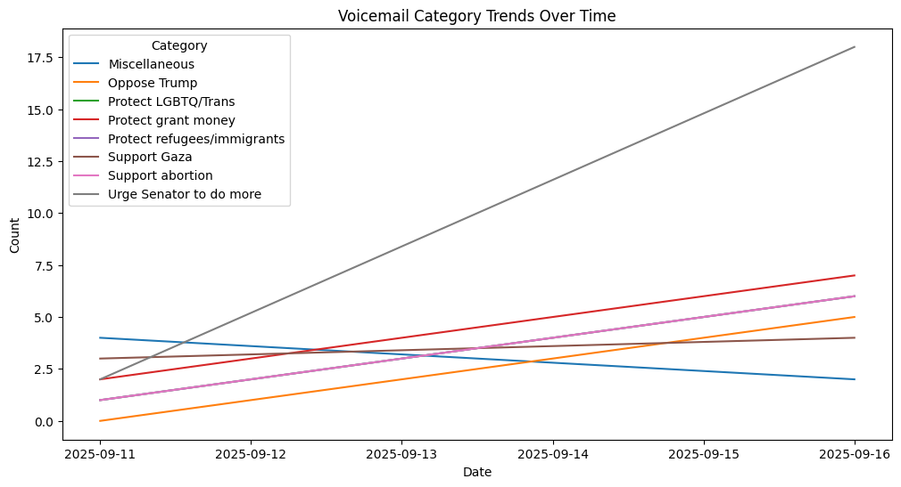

Creating Front-end Visual Insights
Built an Insights dashboard using React and Chart.js. Fetched voicemails from a backend API, processed sentiment data, and visualized overall and category-based trends to help analyze feedback efficiently.

MongoDB | Python | Pandas | Matplotlib | Scikit-learn | LDA | TF-IDF | JavaScript | React | Vite | Interactive Data Visualization | Webhooks
View on GitHub | By Raani Nigam
I had about 68 voicemails that got sent to my inbox. Now I need a way to store and analyze them. I used n8n automation to parse them, use AI to assign values to keys that I needed filled, and then I had them sent to my "voicemails" collection in my local MongoDB.
I connected to my local MongoDB instance using the mongosh shell. I inspected the voicemails collection to confirm that all parsed voicemail objects had been ingested correctly. Then, I validated that the collection contained 68 entries.
This code connects a Node.js app to a local MongoDB database using the MongoClient.
It opens the civicIntel database and sets up access to the voicemails collection so we can read and write data.
The try/catch block makes sure any connection errors get logged, so we know if something goes wrong.
Basically, it sets up the app to start working with our MongoDB data easily.
Next, I performed NoSQL queries to show retrieval using the MongoDB shell and build a front-end display to confirm a smooth connection between the server and the database.
I built the Intake Management endpoint to efficiently fetch voicemails from the database. This allowed the frontend to dynamically load data for review without overwhelming the client or slowing down the interface.
I implemented pagination and search functionality using MongoDB queries. The API accepts `page`, `limit`, and `search` parameters, returning only the relevant subset of voicemails and total counts for display in the frontend dashboard.
Built an Insights dashboard using React and Chart.js. Fetched voicemails from a backend API, processed sentiment data, and visualized overall and category-based trends to help analyze feedback efficiently.
Line graph showing how voicemail categories change over time.

vm["timestamp"] = pd.to_datetime(vm["timestamp"], errors="coerce")
category_trends = vm.groupby([vm["timestamp"].dt.date, "category"]).size().unstack(fill_value=0)
category_trends.plot(kind="line", figsize=(12,6))
plt.title("Voicemail Category Trends Over Time")
plt.xlabel("Date")
plt.ylabel("Count")
plt.legend(title="Category")
plt.show()
Heatmap showing the distribution of voicemails by region and category.
heatmap_data = vm.pivot_table(index="category", columns="region", values="_id", aggfunc="count", fill_value=0)
plt.figure(figsize=(10,6))
sns.heatmap(heatmap_data, annot=True, fmt="d", cmap="Blues")
plt.title("Region vs Category Heatmap")
plt.show()
Scatter plot showing KMeans clustering of voicemails after dimensionality reduction.
vectorizer = TfidfVectorizer(stop_words="english")
X_tfidf = vectorizer.fit_transform(vm["text"])
kmeans = KMeans(n_clusters=4, random_state=42)
vm["cluster"] = kmeans.fit_predict(X_tfidf)
pca = PCA(n_components=2, random_state=42)
X_pca = pca.fit_transform(X_tfidf.toarray())
plt.figure(figsize=(10,6))
plt.scatter(X_pca[:,0], X_pca[:,1], c=vm["cluster"], cmap="viridis")
plt.title("KMeans Clusters of Voicemails")
plt.xlabel("PCA 1")
plt.ylabel("PCA 2")
plt.show()
Bar chart showing the number of voicemails per topic based on LDA analysis.
vectorizer = TfidfVectorizer(stop_words="english", ngram_range=(1,2))
X_tfidf = vectorizer.fit_transform(vm["text"])
n_topics = 5
lda = LatentDirichletAllocation(n_components=n_topics, random_state=42)
lda.fit(X_tfidf)
vm["topic_label"] = vm["dominant_topic"].map(topic_label_map)
plt.figure(figsize=(10,5))
sns.countplot(y="topic_label", data=vm, order=topic_label_map.values())
plt.title("Number of Voicemails by Topic")
plt.xlabel("Count")
plt.ylabel("Topic")
plt.show()